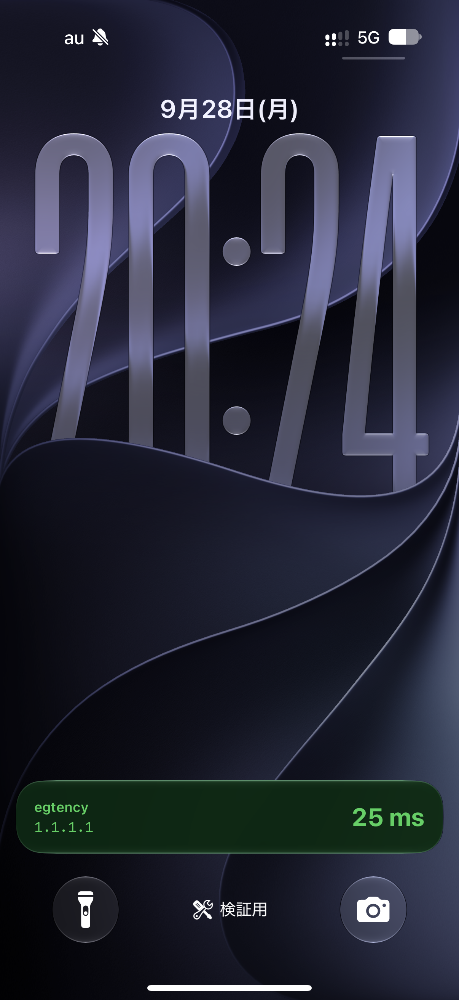
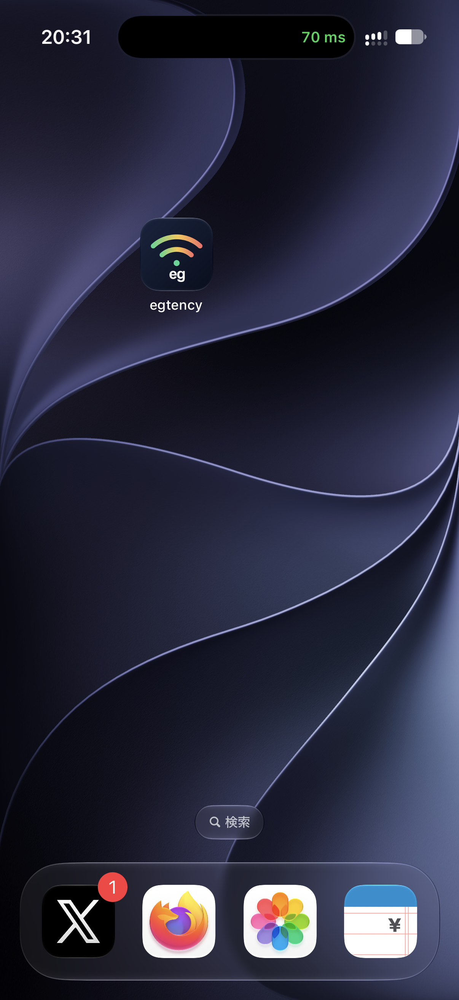
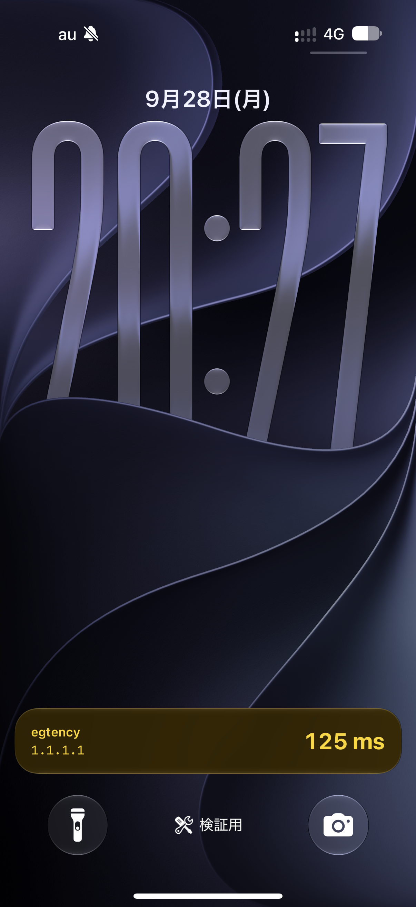
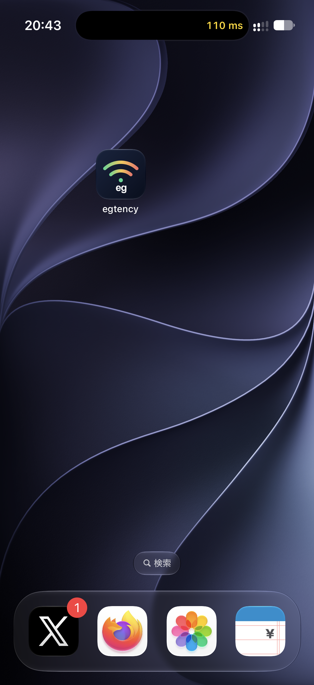
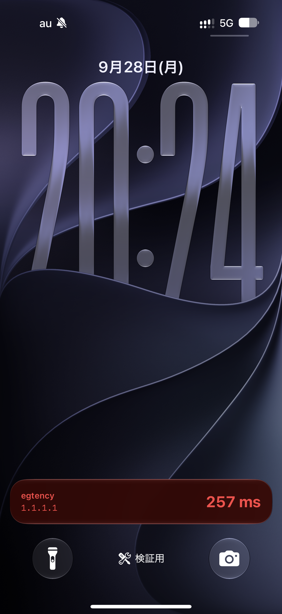
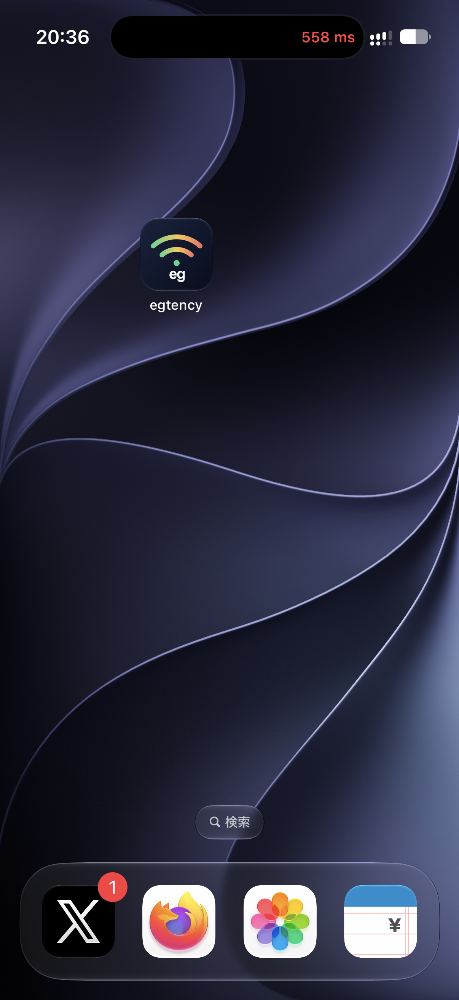
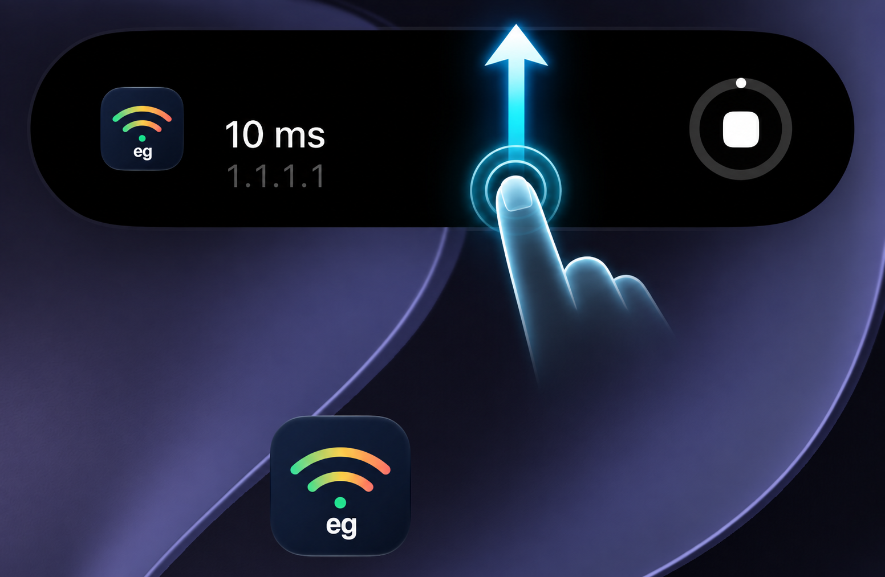
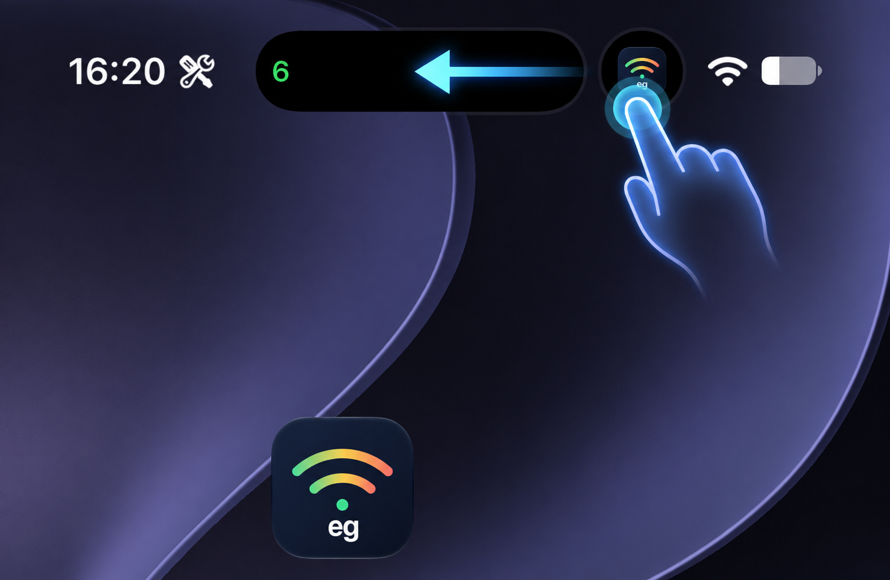
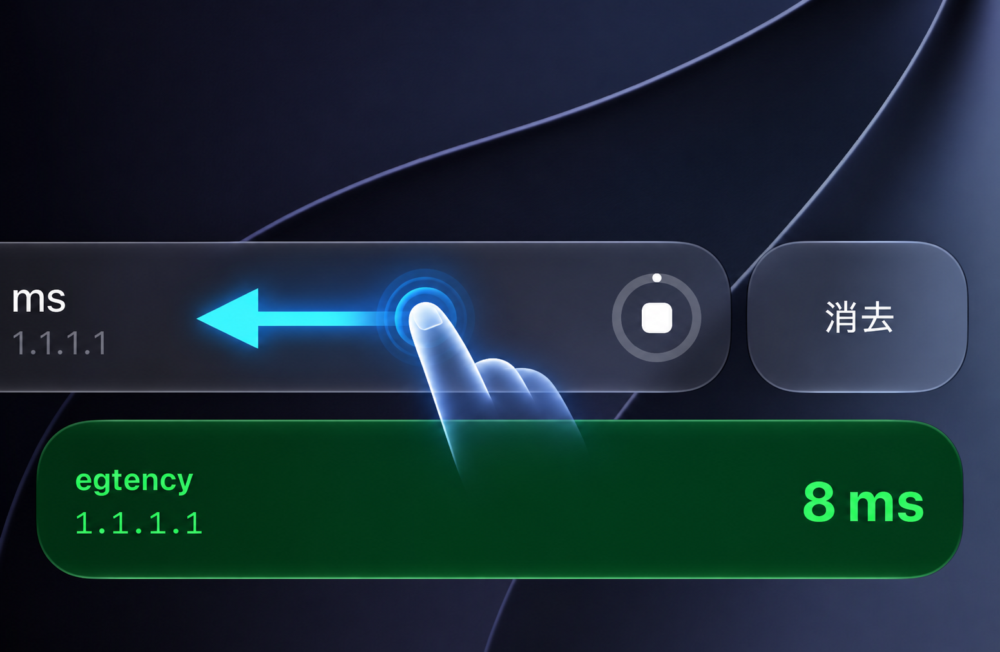

どんなアプリ？
スマホのアンテナはバリバリ立っているのにネットに繋がらなくてイライラした経験はありませんか？このアプリでは現在の通信状態を分かりやすく色分けして可視化します。
egtency は、選んだ宛先へ定期的に ICMP Echo を送り、応答時間をミリ秒（ms）で表示する試作アプリです。ロック画面の Live Activity と、対応機種の Dynamic Island では値を緑・黄・赤に色分けし、応答がない状態も区別します。新幹線などで移動中の変化を確認できます。
表示するのは選んだ宛先までの応答です。アンテナの本数や通信速度、インターネット全体の接続可否を判定するものではありません。
主な機能
1.1.1.1または8.8.8.8を選んで応答時間を計測。- Live Activity の値を緑・黄・赤に色分け。応答なしや更新停止も区別。
- 計測ログを CSV として共有し、後から通信の変化を確認。
- 開始から5時間で自動停止。iOS による中断時には、可能な場合に通知で案内。
基本的な使い方
- 計測先を
1.1.1.1または8.8.8.8から選びます。 - 「開始」を押すと計測が始まります。必要に応じて Live Activity と通知を許可します。
- アプリ画面、ロック画面、対応機種の Dynamic Island で応答時間を確認します。
- 終えるときは「停止」を押します。記録を残す場合は「計測ログを共有」から CSV を保存します。
画面で見る
実機のスクリーンショットです。画像を選ぶと大きく表示できます。
ロック画面の緑色の表示が egtency の Live Activity です。その上の灰色の表示は iOS の計測タスク表示です。
応答時間による色の変化
ロック画面では Live Activity の背景と文字が変わります。Dynamic Island に収納すると、黒い背景の上で数値の文字色が変わります。以下は iPhone 16 Pro で撮影した表示例です。
同じ色の2枚は別々の時点で撮影しており、左右の値は同時刻の測定結果ではありません。画像を選ぶと元のスクリーンショットを表示できます。
緑 0〜100 ms
応答が速い

黄 101〜200 ms
応答がやや遅い

赤 201 ms 以上
応答が遅い

この色分けは選んだ宛先への ICMP 応答時間の目安です。通信速度や、あらゆるサイトにつながることを保証する表示ではありません。
通知領域の表示を整理する
egtency で計測を開始してアプリを閉じると、iOS のバックグラウンドタスク表示がホーム画面やロック画面に出ることがあります。表示が不要な場合は、次の操作で収納・消去できます。図中の指と矢印は操作を示すために合成したものです。
ホーム画面：上にスワイプ
画面上部にバックグラウンドタスクの大きな表示が出たら、表示を上にスワイプします。Dynamic Island に収納されます。

Dynamic Island：左にスワイプ
Dynamic Island の右側に残るバックグラウンドタスクのアイコンも、左にスワイプすると表示を閉じられます。

ロック画面：左にスワイプして消去
ロック画面の灰色のバックグラウンドタスク表示を左にスワイプすると「消去」が現れます。「消去」を選ぶと表示を閉じられます。

実機試験では、iOS の計測タスク表示を閉じても計測は続きました。 ロック画面の緑色の表示は別の Live Activity です。iOS の動作は端末や状況によって変わる可能性があります。
開発状況と注意点
現在は開発中の実証アプリで、一般公開・配布はしていません。 iOS 26 以降の iPhone を対象に開発し、iPhone 16 Pro で実機確認しています。
画面を閉じてから5時間の計測と自動終了に成功した例がありますが、別の試験では iOS が途中で計測を終了しました。常に計測を続けられる保証はありません。値が止まった場合は、アプリを開いて「開始」を押してください。
計測中は少量の通信と電池を使用します。モバイル回線ではデータ容量と電池残量にご注意ください。
掲載内容と画面は 2026年9月時点の試作版に基づきます。